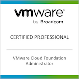
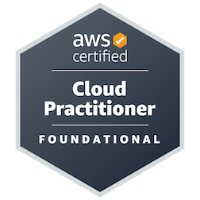

AZ-900
Azure Fundamentals
Built a strong foundation in cloud concepts, Azure services, security, and cost management.
I design and operate resilient, secure virtualization and cloud platforms across VMware, AWS and Azure. For over five years I have supported large-scale environments and delivered stable infrastructure services.
Leading platform work across ONS's enterprise VMware estate, supporting cloud initiatives
Supported VMware platforms across vSphere, SDDC and Horizon VDI.
Supported client infrastructure across VMware and Azure.
Built a strong foundation in cloud concepts, Azure services, security, and cost management.

Validated expertise in managing and operating VMware Cloud Foundation environments at scale.

Demonstrated practical understanding of AWS core services, architecture, and cloud operations.
Final year project on self-configuring ad-hoc network systems.